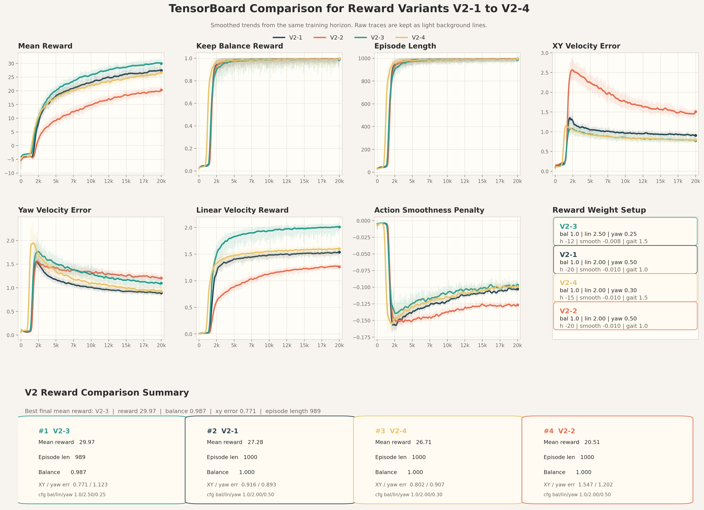

01 项目目的
目标：基于强化学习，掌足机器人可控运动，加感知模块，完成 sim, sim to sim, sim to real
科研经历
目标：基于强化学习，掌足机器人可控运动，加感知模块，完成 sim, sim to sim, sim to real
目标：基于强化学习，掌足机器人可控运动，加感知模块，完成 sim, sim to sim, sim to real
基于原版 limx_tron1 代码 isaaclab 训练，学习调 reward，做到稳定跟时时调整的控制器速度。
Sim to sim 完成 mujoco 迁移，同样稳定跟随时时调整的控制器速度。
自己做算法重构，使用 concurrent teacher-student 模型代替 non current。
正在进行 sim to real 实践。
Reward 调参时间长，用服务器跑了很多天很多次。
Sim to sim 不知道哪里有问题，解决了关节不对应，频率不对，策略更新方式不对。就着代码对 ppo 实现了比较深刻理解。
算法 concurrent 重构难，学算法，代码验证逐渐理解了。
视频 01
图片 01
